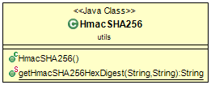

<body>
Dieses Paket stellt verschiedene Hilfsklassen zur Verfügung.
Zum jetzigen Zeitpunkt befindet sich nur die Hilfsklasse <code>HmacSHA256.java</code>.<br>


<br>
	<figure>
		
		<figcaption>Klassenstruktur des Paketes</figcaption>
	</figure>

	<p>weiter schreiben-----</p>
</body>